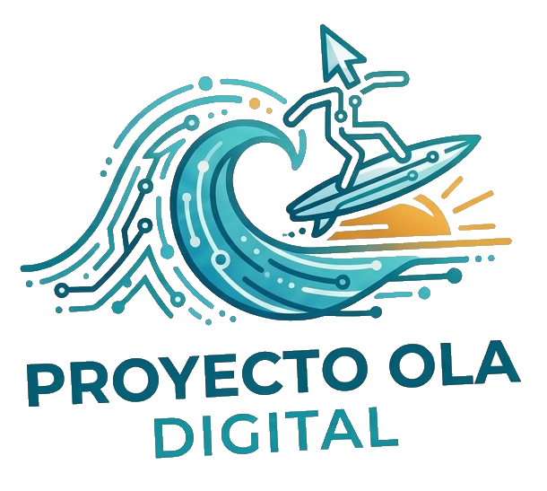

Transformamos hardware olvidado en oportunidades reales. Enseñamos tecnología en el lenguaje de cada persona — desde el emprendedor de barrio hasta la corporación que quiere crecer.
Por qué funciona
No usamos jerga técnica. Explicamos cada concepto con analogías del mundo real que ya conoces. Si entiendes cómo funciona tu negocio, ya entiendes cómo funciona tu computadora.
Dónde actuamos
La misma metodología se adapta a contextos distintos. El conocimiento no tiene un solo destinatario.
Alfabetización digital práctica para quien usa su celular como herramienta de trabajo. Aprendizaje sin tecnicismos, con resultados desde el primer día.
Consultoría técnica, recuperación de infraestructura y formación del talento humano. Soluciones reales para organizaciones que quieren crecer sin gastar de más.
Para organizaciones que quieran implementar el programa en sus espacios o comunidades. El modelo de centro de capacitación es replicable y adaptable.
Cómo lo hacemos
No solo reparamos equipos ni solo damos clases. Acompañamos todo el camino: desde el tornillo hasta que el usuario domina su herramienta.
El programa piloto
Un programa compacto, intensivo y con impacto medible desde la primera sesión.
Proyecto Ola Digital surge de la convicción de que la tecnología debe ser accesible para todos. Recuperamos equipos que el mundo descartó, los ponemos a trabajar, y le enseñamos a cada persona a sacarles el máximo provecho — con paciencia, con método, y en su propio idioma.
Escríbenos
Seas emprendedor, empresa o institución que quiere implementar el programa — cuéntanos y encontramos la forma de trabajar juntos.
✉ proyectooladigital@gmail.comTambién puedes escribirnos directamente a proyectooladigital@gmail.com